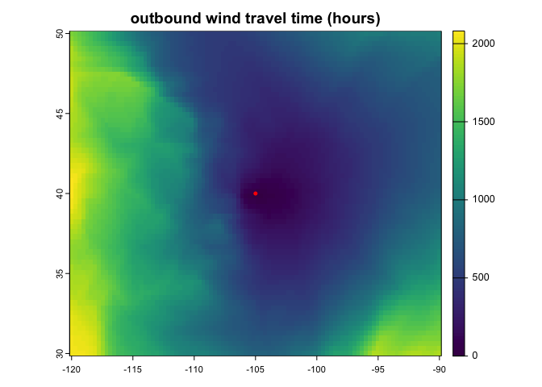

The windscape R package models landscape connectivity by wind dispersal. It includes functions to help you import wind data, model wind diffusion times across a region, visualize the results, and test statistical relationships between wind and your ecological data.
Usage
Here’s a demonstration of a workflow to create a map of estimated wind travel times from a particular location. See the package vignette for details and other functionality.
library(windscape)
library(tidyverse)
site <- vect(matrix(c(-105, 40), 1)) # lat-lon coordinates of a focal site
rast(system.file("extdata/wind.tif", package = "windscape")) %>% # load wind time series rasters
wind_field(order = "uuvv") %>% # convert to a formal wind field object
wind_rose() %>% # summarize into wind rose conductance object
wind_graph("downwind") %>% # format as connectivity graph
least_cost_surface(site) %>% # calculate least cost path from coordinates
plot(main = "outbound wind travel time (hours)") # plot map of travel times
points(site, col = "red") # add origin location to map